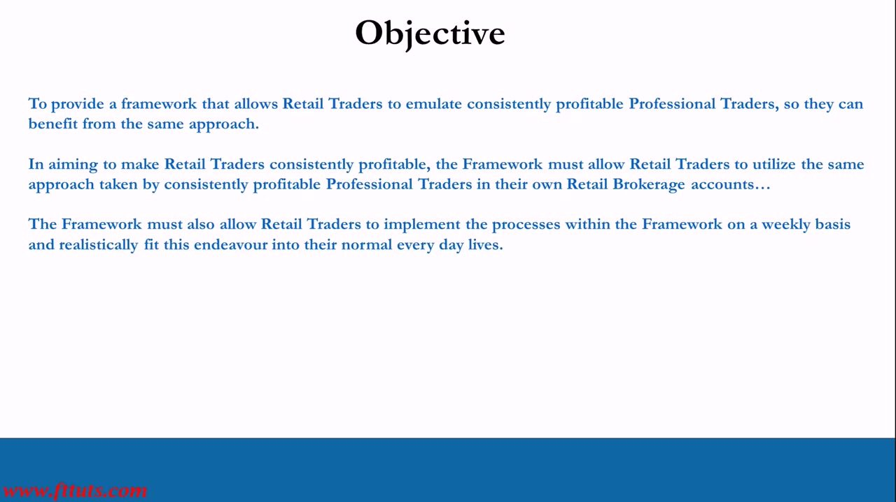
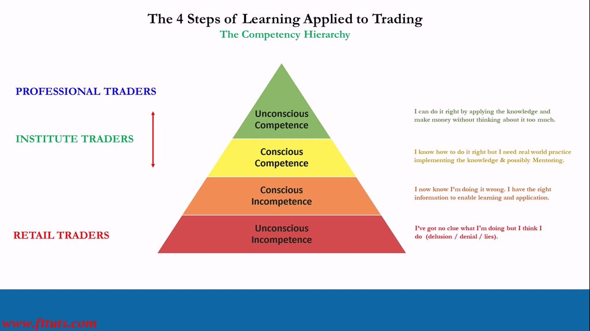
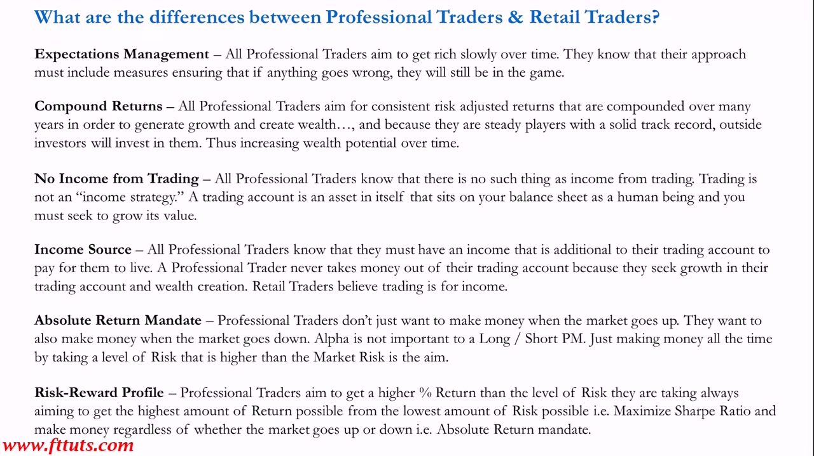
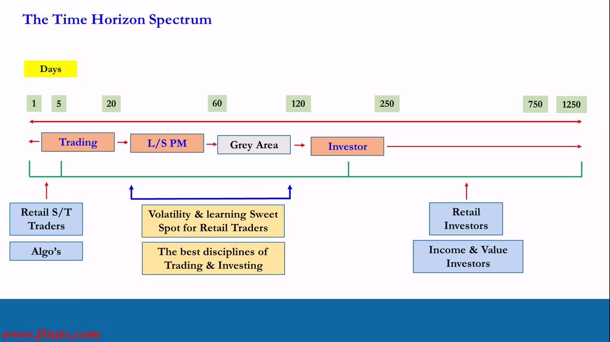
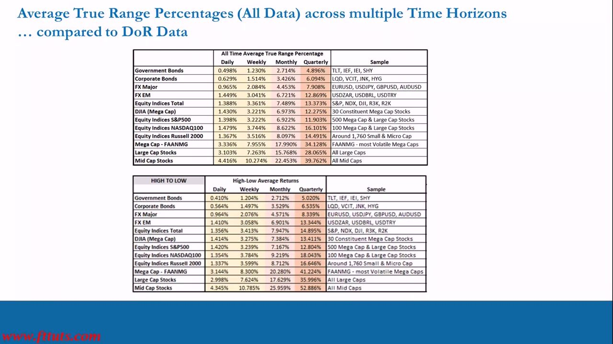
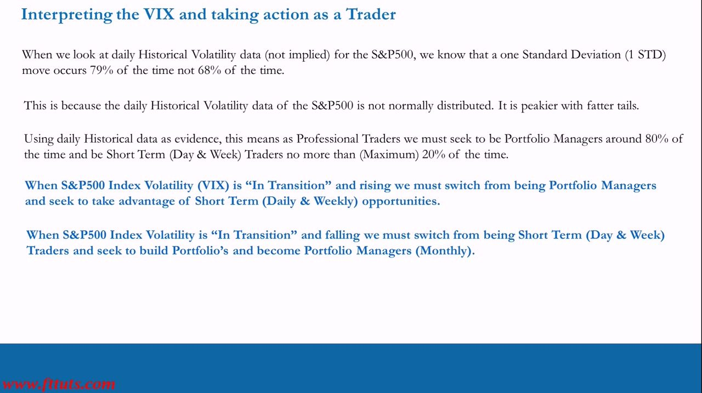
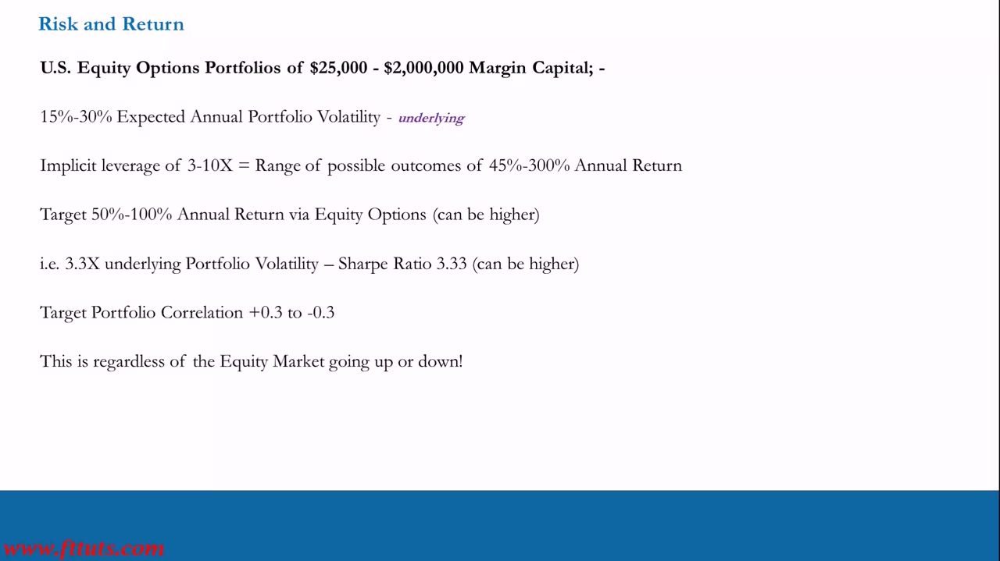
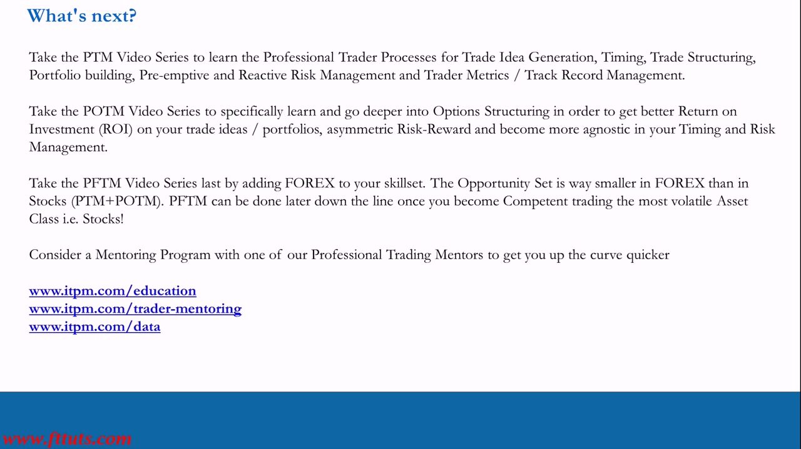

Becoming a Professional Level Trader
The IPLT capstone — how the whole course fits together, the competency ladder from retail to pro, and the North Star risk/return targets by trading vehicle
The framework's goal is to let a retail trader emulate a consistently profitable professional in their own brokerage account, on a weekly cadence: understand volatility first, then target risk/reward in the 1-3 month mid/large-cap equity sweet spot, building Long/Short portfolios at a consciously chosen risk level that outperform whether the market rises or falls.
The gist
- The objective: give retail traders a framework to emulate consistently profitable professionals (hedge-fund PMs / pre-Volcker prop traders who also trade their own capital) in a retail account, implementable weekly around a normal life.
- Climb the Competency Hierarchy: Unconscious Incompetence (retail) -> Conscious Incompetence (has the right info) -> Conscious Competence (Institute traders, needs live practice/mentoring) -> Unconscious Competence (professionals, makes money on autopilot).
- Trading is NOT income: a trading account is an asset on your balance sheet to grow. Pros have a separate income, never withdraw, aim for absolute return (make money up AND down) and to maximise the Sharpe Ratio.
- The central conclusion, cross-validated by two independent volatility methods (DoR and ATRP): extend to the 1-3 month horizon and trade down the market-cap chain into mid- and large-cap single stocks, where volatility is high AND the opportunity set is large and ever-changing. Bonds are not even an option for retail; day-trading indices/FX is futile.
- Operate in the ~20-120 day L/S PM sweet spot, not the 1-5 day algo-dominated day-trading end. Be a Portfolio Manager ~80% of the time and a short-term trader <=20%; a 1-STD daily S&P500 move happens 79% of the time, not 68%.
- The North Star risk/return targets scale with the vehicle's leverage, all on 15-30% underlying annual volatility and +0.3 to -0.3 correlation: US Equity OPTIONS = 3-10x implicit leverage, target 50-100% return, Sharpe ~3.33; US L/S stock = 2x, target 30-60%, Sharpe ~2; ROW CFD = 4x, target 22.5-45%, Sharpe ~1.5.
The objective: retail traders emulating consistent professionals
- Provide a framework that lets retail traders emulate consistently profitable professional traders, so they benefit from the same approach.
- The framework must let them use that same approach in their own retail brokerage accounts.
- It must be implementable on a weekly basis and realistically fit into a normal everyday life (no full-time desk hours required).
This is the whole premise restated. Retail traders globally misunderstand what a professional trader actually is and does, and are joining a mature, sophisticated industry full of intelligent, hungry and ruthless individuals, teams and organizations.

The Competency Hierarchy: from retail to professional
- 1. Unconscious Incompetence (RETAIL TRADERS): 'no clue what I'm doing but I think I do' - delusion, denial, lies.
- 2. Conscious Incompetence: 'I now know I'm doing it wrong; I have the right information to enable learning and application.'
- 3. Conscious Competence (INSTITUTE TRADERS): 'I know how to do it right but I need real-world practice implementing the knowledge, and possibly mentoring.'
- 4. Unconscious Competence (PROFESSIONAL TRADERS): 'I can do it right by applying the knowledge and make money without thinking about it too much.'
- The path up: drop your old ideas -> learn the Pro Trader Systematic Process -> implement profitably in a LIVE real-money account (demo accounts do not count; seek mentoring to bridge theory to practice) -> autopilot mode, professional standard while existing as retail.
The IPLT course moves a retail trader out of unconscious incompetence and toward Institute-Trader (conscious competence) level. You cannot climb until you recognize your old ideas produce fleeting wins but a net loss over many trades, because they are not sustainable. Competence only comes later with real-money implementation over many trades.

Professional vs retail: the key differences
- Compare a Hedge Fund Manager and the pre-Volcker proprietary-trading function of an investment-bank trader to the typical retail profile - both pros and retail trade their OWN capital, so emulating them is logical.
- Expectations Management: pros aim to get rich slowly; if anything goes wrong they are still in the game.
- Compound Returns: pros target consistent risk-adjusted returns compounded over many years; a solid track record attracts outside investors and raises wealth potential.
- No Income from Trading: there is no such thing as income from trading - a trading account is an ASSET on your balance sheet whose value you grow.
- Income Source: pros have a separate income to live on and NEVER take money out of the trading account; retail wrongly believe trading is for income.
- Absolute Return Mandate: make money when the market goes up AND down; alpha is not important to a Long/Short PM - just making money all the time by taking a risk level above market risk.
- Risk-Reward Profile: aim for a higher % return than the risk taken; maximise the Sharpe Ratio, regardless of direction.
The only reason most retail traders don't know these strategies - let alone how to implement them - is misinformation and Conflicts of Interest (COI) in the retail industry.

The time-horizon sweet spot (and Smart vs Dumb Money)
- The Time Horizon Spectrum in days (1, 5, 20, 60, 120, 250, 750, 1250): Trading (~1-20 days) -> L/S PM (~20-60 days) -> Grey Area (~60-120) -> Investor (~250+ days).
- Short end (1-5 days): retail short-term traders and ALGOS - where retail wrongly clusters.
- The 20-120 day L/S PM region is the 'Volatility & learning Sweet Spot for Retail Traders' - the best disciplines of trading and investing. Operate in the ~1-3 month L/S PM sweet spot, not the crowded algo-dominated day-trading end.
- Long end (250+ days): retail investors, income and value investors.
- Smart Money vs Dumb Money: pros first understand the parameters of the industry and strategize (Smart Money); they never make retail's mistakes and are on the other side of retail's trades. Retail, driven by lack of understanding + COI, end up doing exactly what the COI participants want - day-trade, short-term-trade, or invest.
- Pros know the only route to consistent profit: understand Volatility FIRST, then target the Risk and Reward available, via a robust repeatable systematic process, building Long/Short 1-3 month time-horizon portfolios.
This reframes positioning: the edge is in the 1-3 month mid/large-cap window, and it is captured by a repeatable process, not by chasing the algo-dominated day-trading end where the odds are against you.

Why mid/large-cap equities: DoR and ATRP agree
- Master realized-volatility tables (High-Low DoR and All-Time ATRP), by asset class x Daily/Weekly/Monthly/Quarterly, show volatility rising down the market-cap chain and with the holding period.
- DoR High-Low Monthly volatility: Government Bonds 2.712%, Corporate Bonds 3.529%, FX Major 4.571%, FX EM 6.901%, S&P500 7.167%, NASDAQ 100 9.219%, Mega-Cap FAANMG 20.280%, Large Cap 17.629%, Mid Cap 25.959%.
- ATRP Monthly volatility (independent method): Large Cap 15.768%, Mid Cap 22.453%, FAANMG 17.990% - same ordering, same conclusion, cross-validating DoR.
- Bonds (sovereign and corporate) are not even an option for retail: only ~4-5 viable products - too few to get wholesale opportunities. Equities offer ~2,200 stocks vs ~20-25 currency pairs and ~10 non-volatile bond ETFs.
- Day trading is futile: index/currency day-trading opportunities are massively overexaggerated, with historically terrible expected returns even using High-Low (not Close-to-Close) data.
- The answer: extend to the 1-month/quarterly horizon AND go down the market-cap chain to mid- and large-cap single-stock equities - the 'fertile hunting ground' with wholesale, frequent opportunities and high volatility for consistently high expected returns.
The course's central, repeated conclusion: concentrate on 1-3 month mid- and large-cap positioning for maximum opportunities and volatility. It only works where opportunities are wholesale and frequent - which is the mid/large-cap equity space, not bonds, FX or indices.

Interpreting the VIX and outperforming both ways
- Daily historical S&P500 volatility: a 1-STD move occurs 79% of the time, not 68% - the distribution is not normal (peakier, fatter tails). So be a Portfolio Manager ~80% of the time, a short-term (day/week) trader <=20%.
- VIX 'in transition' and RISING: switch from PM to short-term (daily/weekly) opportunities.
- VIX 'in transition' and FALLING: switch from short-term trading to building monthly portfolios.
- When volatility moves aggressively UP and the market falls, Long/Short PMs massively outperform on the way down - their shorts profit while long-only investors bleed.
- When volatility moves aggressively DOWN and the market bottoms/rallies, L/S PMs who build portfolios and consciously CHOOSE a higher risk level than market risk outperform on the way up.
- The L/S structure plus a consciously chosen risk level lets you outperform in BOTH directions.
Understanding the VIX properly is crucial to a professional approach: it tells you when to be a portfolio manager and when to switch to short-term trading, and the L/S structure is what converts both up- and down-moves into outperformance.

The risk/return targets by trading vehicle (the North Star)
- All three vehicles run on 15%-30% Expected Annual Portfolio Volatility of the underlying, target Portfolio Correlation +0.3 to -0.3, and make money regardless of market direction. Position sizes are quoted as MARGIN levels ($25,000-$2,000,000), so risk and return are leveraged.
- US Equity OPTIONS: implicit leverage 3-10x -> outcome range 45%-300% annual return; target 50%-100% annual return (can be higher); ~3.3x underlying vol => Sharpe Ratio ~3.33 (can be higher). The highest-Sharpe route.
- US Long/Short STOCK: direct leverage 2x -> outcome range 30%-60%; target 30%-60% annual return; ~2x vol => Sharpe ~2. NOTE: US L/S stock PMs only get 2x overnight margin (vs 4x ROW CFD), so a US trader must be better to match.
- ROW CFD: direct leverage 4x -> outcome range 60%-120%; target 22.5%-45% annual return ('Realistic!'); ~1.5x vol => Sharpe ~1.5.
- The Sharpe ladder: options (~3.33) > US L/S stock (~2) > ROW CFD (~1.5), because options provide much higher implicit leverage per $ and favourable risk asymmetry. Detailed options structuring is taught in the POTM series.
These are the same 15-30% underlying-volatility portfolios; the vehicle's leverage is what scales the outcome range and the achievable Sharpe. Options top the ladder from higher implicit leverage per dollar plus limited-downside asymmetry, not from more risk.

What's next: PTM, POTM, PFTM and mentoring
- PTM Video Series: learn the professional-trader processes - trade-idea generation, timing, trade structuring, portfolio building, pre-emptive and reactive risk management, and trader metrics / track-record management.
- POTM Video Series: go deeper into Options Structuring for better ROI on trade ideas, asymmetric risk-reward, and becoming more agnostic in timing and risk management.
- PFTM Video Series (last): add FOREX. The opportunity set is much smaller in FX than in stocks, so do this later, once you are competent trading the most volatile asset class (stocks).
- Consider a Mentoring Program with a professional trading mentor to get up the curve quicker.
- The teachings and processes of the IPLT and other ITPM series are timeless - they can be applied in all market conditions forever. Key resources: Basic_Statistics_Guide and VIX_Hedges (PDFs); Distribution_Of_Returns, ATRP, Implied_Volatility_Calculator and Portfolio_Volatility_Calculator (Excel).
This closes the IPLT course and opens the rest of the ITPM curriculum. The next block (PTM) teaches the processes that turn this volatility-and-risk foundation into actual trade ideas and portfolios.

Glossary
- Competency HierarchyThe four steps of learning applied to trading: Unconscious Incompetence (retail) -> Conscious Incompetence (has the right info) -> Conscious Competence (Institute traders; needs live practice/mentoring) -> Unconscious Competence (professionals; makes money on autopilot).
- Absolute Return MandateMaking money whether the market rises or falls, by taking a risk level above market risk; alpha is not the point for a Long/Short PM - just consistent profit in all directions.
- Sharpe RatioReturn per unit of risk. The targets scale by vehicle: US Equity Options ~3.33, US L/S stock ~2, ROW CFD ~1.5, all on 15-30% underlying annual volatility.
- Direct vs implicit leverageCFDs/stock carry DIRECT leverage (ROW CFD 4x, US stock 2x); options carry IMPLICIT leverage (3-10x) per $ of margin, plus favourable risk asymmetry - which is why options top the Sharpe ladder.
- Time Horizon SpectrumDays scale (1,5,20,60,120,250,750,1250): Trading ~1-20 -> L/S PM ~20-60 -> Grey Area ~60-120 -> Investor ~250+. The ~20-120 day L/S PM region is the retail volatility-and-learning sweet spot.
- Smart Money vs Dumb MoneyPros first understand the industry's parameters and strategize (Smart Money) and sit on the other side of retail's mistakes (Dumb Money), which are driven by lack of understanding and industry Conflicts of Interest (COI).
- DoR / ATRPTwo independent realized-volatility measurement methods - Distribution of Returns (High-Low) and Average True Range Percentage. Across all asset classes and horizons they reach the same conclusion: mid/large-cap equities on the 1-3 month horizon top the tables.
- Opportunity SetThe number of viable, ever-changing tradeable products. ~2,200 equities and hundreds of mid/large caps vs ~4-5 bond products or ~20-25 FX pairs - which is why equities, not bonds or FX, are the fertile hunting ground.